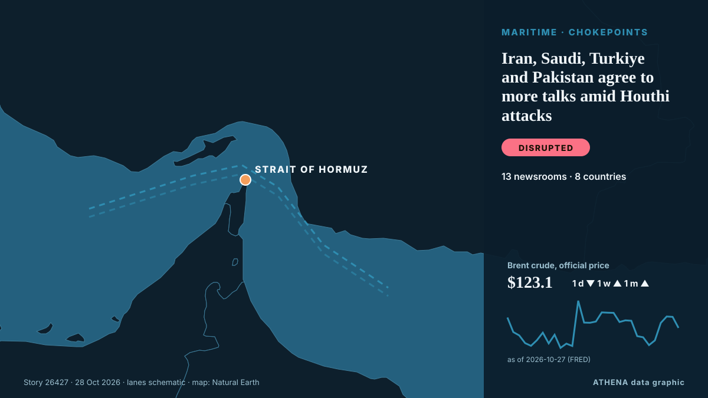

Iran, Saudi, Turkiye and Pakistan agree to more talks amid Houthi attacks

Top officials from four countries to continue talks for peace and security as Saudi forces down more Houthi missiles. من Al Jazeera English
نشرته بشكل مستقل 13 مصدرًا في 8 دول منذ 24 أكتوبر، وأول من نشره Iran International (English)؛ والتغطية تتراجع. يقدّر ATHENA الخطر بأنه معتدل (3.3/10)، ويعود ذلك أساسًا إلى خطورة الضرر الموصوف وجودة الأدلة. الثقة 91٪ (مرتفعة)، وعدد المصادر المستقلة المؤكِّدة: 13، بمتوسط موثوقية للمصادر يبلغ 77٪.
لماذا يهم: البحر الأحمر ومضيق باب المندب هما أقصر طريق بحري بين آسيا وأوروبا عبر قناة السويس. تدفع الهجمات على السفن التجارية الشركات إلى الالتفاف حول أفريقيا، ما يضيف وقتًا وكلفة على التجارة العالمية.
ما الذي تغيّر: تقرير جديد واحد خلال 24 ساعة حتى 28 أكتوبر.
العنوان الأول: Iran, Saudi Arabia, Turkey and Pakistan agree to further talks
تُعرض العناوين بالإنجليزية كما نُشرت.
نظرة سريعة
اختير وقُيِّم وكُتب وفق منهجية ATHENA المنشورة. لا يتدخل أي محرر في الأحداث بعينها. كيف يُنتَج ›
| 24 Oct 03:03 UTC | 1 |
|---|---|
| 24 Oct 09:03 UTC | 0 |
| 24 Oct 15:03 UTC | 0 |
| 24 Oct 21:03 UTC | 0 |
| 25 Oct 03:03 UTC | 0 |
| 25 Oct 09:03 UTC | 0 |
| 25 Oct 15:03 UTC | 0 |
| 25 Oct 21:03 UTC | 0 |
| 26 Oct 03:03 UTC | 0 |
| 26 Oct 09:03 UTC | 1 |
| 26 Oct 15:03 UTC | 10 |
| 26 Oct 21:03 UTC | 1 |
| 27 Oct 03:03 UTC | 5 |
| 27 Oct 09:03 UTC | 0 |
| 27 Oct 15:03 UTC | 0 |
| 27 Oct 21:03 UTC | 0 |
| 28 Oct 03:03 UTC | 0 |
| 28 Oct 09:03 UTC | 1 |
| 24 Oct 03:24 UTC | 0.0 |
|---|---|
| 26 Oct 16:57 UTC | 2.2 |
| 26 Oct 19:16 UTC | 3.4 |
| 28 Oct 14:35 UTC | 3.5 |
| 28 Oct 14:35 UTC | 3.3 |
لماذا هذه الأرقام
الأهمية
الخطر
الثقة
التغطية — من نشر الخبر ومتى
العنوان كما نُشر · يفتح الأصل- Iran International (English) · إيران · IranPakistan talks peace with Iran, defends Saudis against Tehran’s proxies
- The New Arab · INTIran, Saudi Arabia, Turkey and Pakistan agree to further talks
- IRNA (English) · إيران · IranTehran summit press statement: Talks on regional peace and security will continue
- Haaretz (English) · إسرائيل · IsraelSaudi Arabia, Turkey and Pakistan hold de-escalation talks with Iran amid regional tensions
- Anadolu Agency (English) · تركيا · TurkeyTürkiye, Saudi Arabia, Pakistan, Iran pledge continued cooperation on regional security
- Tehran Times · إيران · IranPezeshkian to Turkey, Pakistan, Saudi officials: Iran seeks cooperation, will defend rights
- Middle East Eye · INTIran, Saudi Arabia, Pakistan, Turkey to cooperate on regional security
- Mehr News (English) · إيران · IranWest Asian security must be regionally driven: Razaei
- Daily News Egypt · مصر · EgyptSaudi, Turkish, and Pakistani officials hold talks with Iran to de-escalate regional crisis
- Mehr News (English) · إيران · IranTalks on regional peace and security will continue
- Kurdistan24 (English) · العراق · IraqSaudi Arabia, Turkey and Pakistan Hold Talks with Iran to Prevent Renewed War
- Anadolu Agency (English) · تركيا · TurkeyIran says 4-nation talks back regional security free of outside interference
- Express Tribune · باكستان · PakistanIran's supreme leader calls for tighter control of Strait of Hormuz to end US war
- Al Jazeera English · قطر · QatarIran, Saudi, Turkiye and Pakistan agree to more talks amid Houthi attacks
- IRNA (English) · إيران · IranIn photos: Quadrilateral meeting of Iran, Pakistan, Turkey, Saudi Arabia
- IRNA (English) · إيران · IranTehran quadrilateral meeting reflects Iran’s resistance, military prowess: Security official
- Daily Mirror · سريلانكا · Sri LankaIran, Saudi, Turkiye and Pakistan agree to more talks amid Houthi attacks
- IRNA (English) · إيران · IranWest Asia security should come from within region: Iran top security official
- Tehran Times · إيران · IranRegional Security Without the US: Iran Takes the Lead